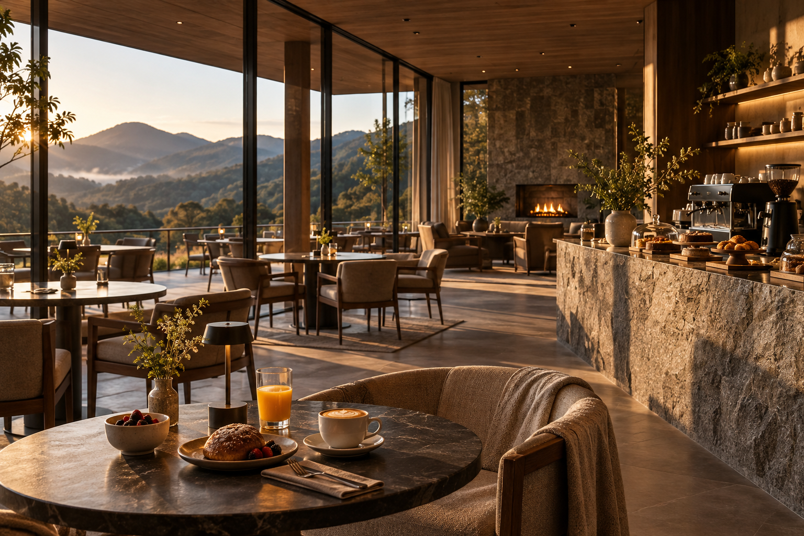

Comece sem despertador.
Café servido lentamente, luz entrando pela montanha e nenhum compromisso imediato.

Na AURÉA, cada experiência foi pensada para devolver algo que a rotina costuma levar: tempo, silêncio e presença.
Descobrir experiências ↓A experiência AURÉA não é construída em torno de uma agenda cheia. Ela nasce do espaço entre os momentos.
Um banho aquecido, uma caminhada entre araucárias, o café servido lentamente, o fogo aceso quando o dia começa a desaparecer.

Um espaço dedicado ao cuidado sem pressa. Água aquecida, massagens, aromas naturais e ambientes silenciosos criam um ritual pensado para devolver equilíbrio ao corpo.

Trilhas leves entre mata nativa e araucárias convidam a perceber o território em outro ritmo. Caminhar aqui não é sobre chegar primeiro.

Ao entardecer, a temperatura cai, o fogo é aceso e a paisagem assume outro ritmo. Um convite para vinho, conversa ou simplesmente permanecer em silêncio.

Café brasileiro, pães preparados na casa, frutas da estação e receitas que respeitam o tempo da manhã.

Ingredientes da serra, produtores próximos e referências brasileiras compõem uma cozinha que acompanha o ritmo das estações.
Descobrir a gastronomia →Café servido lentamente, luz entrando pela montanha e nenhum compromisso imediato.
Spa, caminhada, leitura, piscina ou simplesmente tempo para não fazer nada.
Um drink, o fogo aceso e o horizonte transformando lentamente suas cores.
Cozinha da serra, vinho, conversa e o silêncio das montanhas ao redor.
Escolha sua acomodação e permita que a serra determine o ritmo dos próximos dias.
Reservar minha estadia →